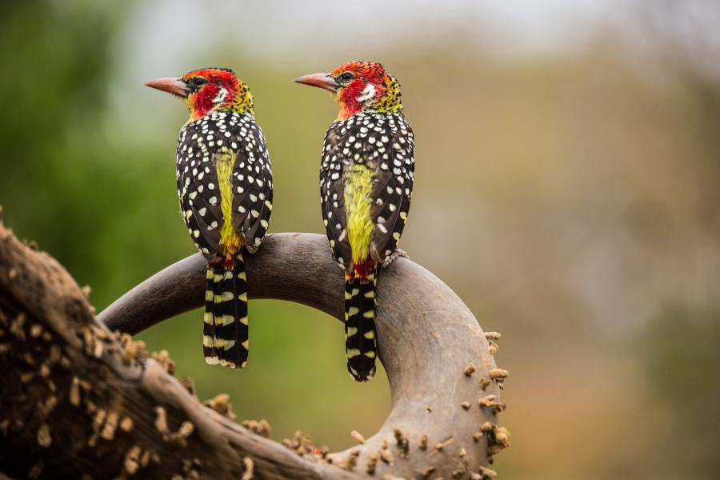

Artificial intelligence is becoming a powerful tool for studying life on Earth—and the advancement of BioCLIP 2 is helping it grow in the right direction.
Developed by the Imageomics Institute based at The Ohio State University, BioCLIP 2 is the latest version of a specialized AI model designed to recognize patterns in plants, animals, and other forms of life using images and text.
What makes BioCLIP 2 special is that it’s trained on the massive TreeOfLife‑200M dataset of over 214 million images—one of the largest collections of biological images ever assembled. This helps machine learning do more than just recognize a species; it can also start to understand how different species are related, what traits they have, and even subtle differences like whether an animal is young or old, male or female.
This ability to “see” and interpret details without being directly told what to look for is a major leap forward.
For example, BioCLIP 2 naturally groups species together based on shared traits or habitats—like clustering Darwin’s finches by the shapes of their beaks, something that took human scientists years to study. It also performs well on tasks like identifying animal traits, recognizing diseases in crops, or spotting unfamiliar species it hasn’t seen before.
"One of the most intriguing discoveries in modern AI is emergent properties, unexpected behaviors or capabilities spontaneously appearing after very large-scale training," said Yu Su, the faculty lead of the BioClip project. "We are very excited about BioCLIP 2 because it is the first time to find similar emergent properties from training AI models for biology. We are truly amazed by the hidden structures in nature captured by our model, and we look forward to seeing new biological and ecological applications enabled by this."
This kind of AI is key to what scientists call “AI for Nature”—building tools to better understand and protect biodiversity in a changing world.
As researchers gather more data from cameras, drones, and audio sensors, such smart systems can help researchers keep up and find meaning in it all.
BioCLIP 2 is the result of a large, cross-disciplinary team of computer scientists, biologists, and ecologists from the Imageomics Institute. Led by researchers Jianyang Gu and Samuel Stevens, the co-authors include Elizabeth G Campolongo, Matthew Thompson, Net Zhang, Jiaman Wu, Andrei Kopanev, Zheda Mai, Alexander E. White, James Balhoff, Wasila Dahdul, Daniel Rubenstein, Hilmar Lapp, Tanya Berger-Wolf, Wei-Lun Chao, and Yu Su.
The team worked together to train the model using high-performance computing and expert-curated data. Their work builds on the original BioCLIP model, which earned Best Paper honors at CVPR 2024, one of the top AI conferences in the world.
This work is supported by National Science Foundation funding and powered by the Ohio Supercomputer Center and Bridges‑2 infrastructure, as well as a host of collaborators.